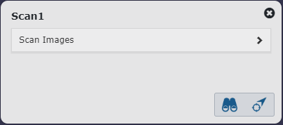

Pick Asset
To obtain information about an asset you see in the viewer, you can pick an asset in the viewer. Alternatively, you can pick an asset via the asset toolbar commands in the content browser.
Picking an asset will highlight the asset in the viewer. When an asset is picked, the navigation popup becomes visible at the top of the viewer area.

To perform commands on the picked asset, right-click inside of the viewer area and use the commands presented by the asset context menu.
To unpick an asset, either click into an empty viewer area, or use the Clear Selection command in the asset context menu.
Navigation popup
The navigation popup displays the name of the picked asset together with the names of all parents of the asset.

The navigation popup lets you:
- Pick one of the asset's parents from the hierarchy control. This highlights the parent in the viewer and updates the navigation popup.
- Pick a child asset of one of the asset's parents by clicking on the arrow displayed between two asset names and then selecting the child asset's name from the displayed list.

- Go back and forward in the history of previously picked assets.
Picking a Marked Point
When a marked point is picked, both the navigation popup and the asset context menu become available, similarly to when an asset gets picked. The functionality of the navigation popup and asset context menu displayed for a marked point is limited though.
- Navigation popup only shows the name of the marked point together with the name of the asset to which the marked point is attached:

- Refer to the asset context menu description for a list of commands available for marked points.
Scan Quick Info
When you pick a scan either by clicking on the scan tripod in the viewer or by selecting the scan in the content browser, the Scan Quick Info popup appears.

The Scan Quick Info popup displays the name of the scan and lets you:
- Execute scan commands.
- Expand the list of images for the scan. Clicking on an image will open that image in the bubble viewer.

|
Zoom to the boundaries (extents) of the selected scan. |
|
Align the camera to the position and direction of the scan. |